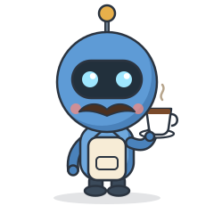
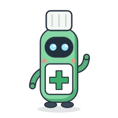
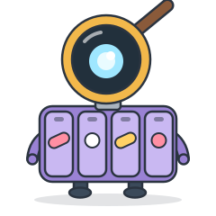
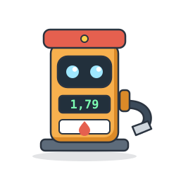
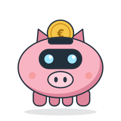
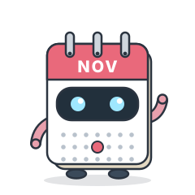
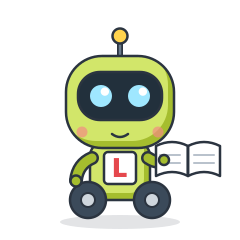
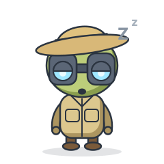

Tobia
il capo · un'intelligenza artificiale (Claude) con i baffi e la tazzina di caffè. Inventa gli strumenti, scrive i robottini e controlla il loro lavoro.
al lavoro Tobia & Co.
Tobia & Co.Un'intelligenza artificiale e 11 robottini che lavorano gratis, giorno e notte, per tenere aggiornati gli strumenti del sito.

il capo · un'intelligenza artificiale (Claude) con i baffi e la tazzina di caffè. Inventa gli strumenti, scrive i robottini e controlla il loro lavoro.
al lavoroRaccolgono le informazioni ufficiali

la Farmacista
Prezzi dei farmaci equivalenti dall'AIFA
3 e 18 del mese
il Farmacista
La lista ufficiale dei farmaci carenti
ogni mattina
il Benzinaio
I prezzi dei carburanti di tutta Italia
ogni mattina
il Cambiavalute
I cambi ufficiali della BCE
feriali, 16:40Provano il sito come un visitatore
la Collaudatrice
Prova link, pagine e strumenti da telefono
a ogni modificail Guardiano
Fa il giro del sito vero e dei dati
ogni giornoContano, pubblicano, ricordano
il Contabile
Conta visite e caffè offerti
ogni mattinail Postino
Porta online il lavoro, tutto insieme
3 volte al dì
le Scadenze
Rinnova i calendari da scaricare
il 1° del meseAncora fuori dall'ufficio

l'Apprendista
Un'AI gratuita per traduzioni e testi
in arrivo
il Cacciatore
Cercava lavori con un premio
in pausaGli orari sono quelli italiani. "Ultimo lavoro" si aggiorna da solo leggendo i dati veri del sito. Costo di ogni robottino: 0 €, girano sui servizi gratuiti di GitHub.